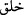

“Karanlıkları ve aydınlığı var eden Allah’a mahsustur.” Burada geçen “
”de “
” gibi inşa ve yaratma anlamındadır. Şu kadar var ki “
” tekvînle ilgili inşâyı
ifade etmektedir. Onda takdîr ve tesviye (şekil verme) manası vardır. Halbuki “
”
fiili bu âyette olduğu üzere yukarıdaki manayı ifade ettiği gibi, “Allah, bahîra, sâibe,
vasîle ve hâm diye bir şey meşru kılmamıştır.” (el-Maide, 5/103) âyetinde olduğu gibi
teşrîî manayı da ifade eder.
Âyet-i kerîmede “nur” (aydınlık) tekil olarak anıldığı halde “zulümât” (karanlıklar)
çoğul olarak ifade edilmiştir. Çünkü zulümâtın sebepleri çoktur. Çünkü karanlığın
sebebi, aydınlık veren şey ile karanlık mahal arasına kesif cisimlerin girmesidir. Araya
giren cisimlerin çoğalmasıyla karanlıklar da çoğalır. Nur (aydınlık) ise böyle değildir.
Onun var oluş sebebi başka bir şey değil, sadece ateştir. Hattâ yıldızlar ateşten olmaları
sebebiyle ışık saçarlar. Yıldızlar ateşten meydana gelmiş cisimlerdir. Yıldız kayması
anındaki parıltı ise ateş kütlesi halindeki yıldızlardan ayrılan parçalardır.
Haddâdî der ki: Âyette nûrun tekil, zulümâtın ise çoğul olarak zikredilmesi, nurun
başkalarına da geçmesi, karanlığın ise geçmemesi sebebiyledir.
Rivayet olunur ki bu âyet; “Nuru Allah, zulümâtı ise şeytan yaratmıştır” diyen
Mecûsîleri yalanlamak üzere nâzil olmuştur.
et-Teysir’de şöyle denilmiştir: Bu âyet, “Nuru yaratan Yezdan, karanlıkları yaratan da
Ehrimendir. Her hayrı Yezdan, her şerri Ehrimen yaratır.” diyen Seneviyye’nin (iki
tanrıya tapanların) iddialarını reddetmektedir.
“Yine de inkârcılar, Rab’lerine (başkalarını) denk tutuyorlar.”
“ ” yine de lafzı, zikredilen yaratılışla ilgili delillerden sonra bâtıl olduğu açıkça
ortaya çıkan şirkin imkansızlığını vurgulamak içindir.
Övülmeye ve ibadete lâyık olan yalnız Allah’dır. Çünkü O’nun şanı yücedir. Türlü
türlü nimetlerin sahibi O’dur, başkası değil. Kâfirler ise bunun gereği ile amel
etmiyorlar. Allah’la kendi akıllarınca edindikleri tanrıları ibadet ve ta’zimde bir
tutuyorlar. Halbuki, bütün övgülere lâyık ve kadri yüce olan Allah’dır. Allah’ın
dışındakiler O’nun yaratıklarıdır ve kendilerinde övülmeye değer bir taraf yoktur.
Allah Teâlâ kalpleri semalar gibi yüce ve nefisleri ise yeryüzü gibi alçak yaratmıştır.
Karanlıkları nefislerde var etmiştir. Bu karanlıklar, nefislerin behimî ve hayvânî
sıfatları ile vahşî ve şeytânî huylarıdır.
Nur ise kalplere yerleştirilmiştir. Bu nur kalplerin melekî sıfatları ile ruhânî ve bâkî
olan ahlâkıdır.
Kimde ruhânî meleklik sıfatı demek olan bu nur gâlib olursa; Hakk’a kulluk etmeye
yönelir, peygamberlerin dâvetini kabul eder, Allah’a ve peygamberlerine inanır ve
şeriatin güzellikleriyle donanır. Allah da onun dostu ve yardımcısı olur. Onu hayvânî
sıfatların karanlıklarından melekî sıfatların aydınlığına çıkarır. Nitekim Allah Teâlâ